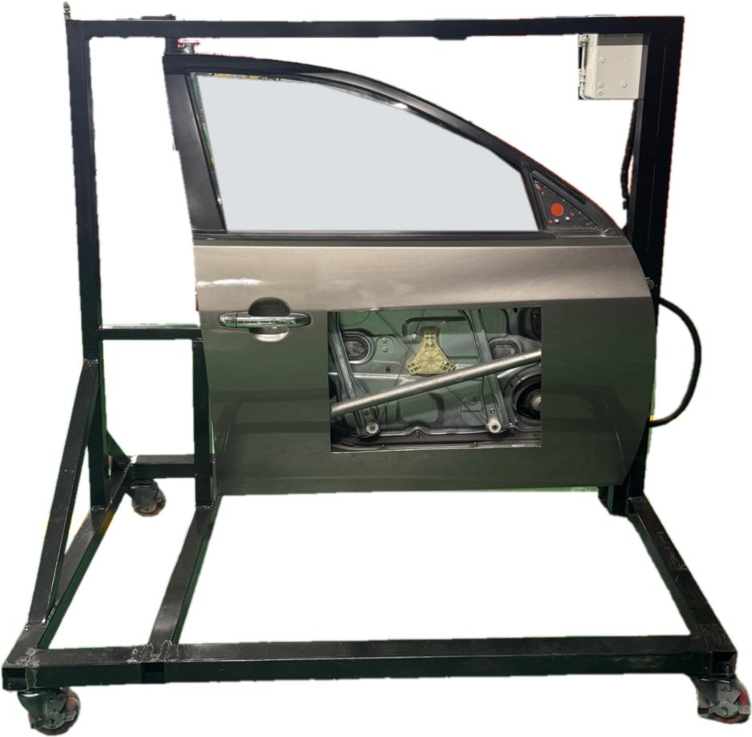
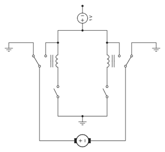

개요

제작 동기
도어의 구조 및 전기 시스템을 쉽게 이해하기 위하여 제작하였습니다.
무엇을 하는 작품인가요?
윈도우 및 락 장치의 작동 회로와, 작동 시 소모되는 전류를 측정할 수 있는 이동식 교보재입니다.
제작 정보
- 프로젝트
- 융합프로젝트
- 제작 기간
- 총 30주 (2026)
- 제작 인원
- 8명
구성
- 도어
- 폐차 자동차 조수석 도어
- 거치대
- 각관을 용접해 만든 프레임 + 캐스터 (이동식)
- 작동부
- 파워윈도우 모터, 도어락 액추에이터
- 제어
- 스위치 · 릴레이 회로, 제어 박스
조원 소개
총괄
김진완
설계 및 전 공정 작업 주도
-
01절단 · 용접
- 이덕영절단 · 용접
- 김태한공구 세팅 · 보조
-
02도장 · 마감
- 신유성도장
- 우용문도장 마감 · QR 작업
- 송민근판금 마감
-
03전기 · 작동
- 전성운회로도 분석 · 전기 · 작동
-
04기록 · 발표
- 방영환사진 · PPT
- 송민근자료 분석 · 발표
작동법
스위치를 누르면 모터에 걸리는 전원의 극성(+/-)이 바뀌어 모터의 회전 방향이 전환됩니다.
스위치 상태별 동작
-
OFF정지
모터 양쪽 단자가 모두 접지되어 전류가 흐르지 않아 멈춥니다.
-
UP상승
한쪽 단자에 B+(전원), 반대쪽은 접지되어 모터가 정회전하고 유리가 올라갑니다.
-
DOWN하강
B+와 접지가 서로 바뀌어 전류 방향이 반대가 되고, 모터가 역회전하며 유리가 내려갑니다.
회로도


이미지를 누르면 크게 볼 수 있어요.